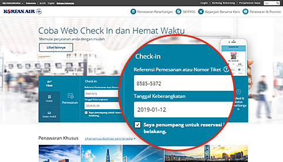
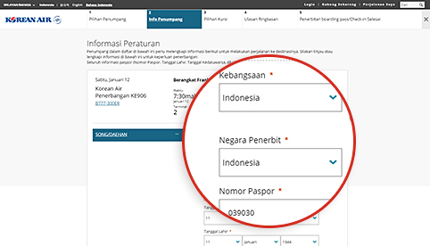
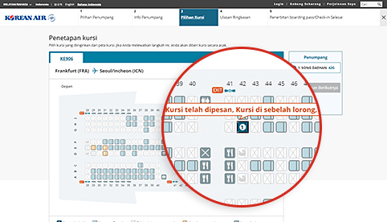
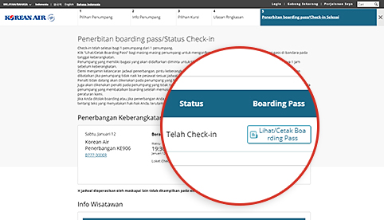

Prosedur check-in yang lebih singkat! Persiapkan perjalanan Anda dengan lebih nyaman!
Check-in Mobile / Web
Ini akan menghemat waktu dan memungkinkan Anda untuk bersantai setibanya di bandara.
Cara Penggunaan
| Kelayakan | Rute Perjalanan | Waktu Check-in |
|---|---|---|
| Penumpang yang bepergian bersama penerbangan Korean Air dengan e-Ticket yang valid | Semua rute |
|
- (Referensi 1) Penerbangan ke/dari AS, Kanada, Inggris, dan Paris : 24 jam ~ 1 jam sebelumnya keberangkatan
- Pembatasan Check-In Mobile/Web (Klik tautan ini untuk mengonfirmasi)
 Pastikan Anda memiliki cukup waktu untuk pemeriksaan keamanan dan prosedur lainnya (selesaikan semua prosedur 1 jam sebelum keberangkatan untuk penerbangan internasional, dan 20 menit sebelum keberangkatan untuk penerbangan domestik)
Pastikan Anda memiliki cukup waktu untuk pemeriksaan keamanan dan prosedur lainnya (selesaikan semua prosedur 1 jam sebelum keberangkatan untuk penerbangan internasional, dan 20 menit sebelum keberangkatan untuk penerbangan domestik)
Cara check-in

-

Step 1 Cari reservasi
- Check-in lebih mudah dilakukan jika Anda memasukkan nomor frequent flyer saat memesan.
- Apabila reservasi tidak ditampilkan, masukkan referensi pemesanan atau nomor tiket, kemudian masukkan tanggal keberangkatan dan nama.
Anda dapat memulai check-in web dengan memasukkan nomor reservasi, tanggal keberangkatan, dan nama penumpang jika Anda bukan non-anggota check-in di area reservasi tiket di layar utama beranda.
-

Step 2 Masukkan informasi dokumen perjalanan (penerbangan internasional)
- Informasi pada paspor dan dokumen perjalanan yang diperlukan wajib dimasukkan secara akurat. Anda mungkin tidak dapat melakukan check-in, tergantung pada hasil pemeriksaan awal di kota keberangkatan/kedatangan, jika Anda tidak memasukkan informasi yang valid.
- Opsi Check-in Mobile memungkinkan Anda untuk memasukkan informasi paspor secara praktis menggunakan fungsi pemindaian paspor.
Informasi paspor seperti kebangsaan, negara / wilayah yang mengeluarkan paspor, nomor paspor, dll. Dapat dimasukkan di layar input informasi penumpang tahap kedua pada saat Web check-in.
-

Step 3 Penetapan kursi
- Pilih kursi yang Anda inginkan.
- Login dengan ID Anda (atau kata sandi untuk non-anggota) jika Anda ingin mengubah nomor kursi Anda. (Namun demikian, data SKYPASS wajib disimpan sebelum login.)
Web Check-In Langkah 3 Anda dapat memeriksa informasi setiap kursi, seperti nomor kursi, lokasi, dan karakteristik kursi, dan memilih kursi yang diinginkan dari layar penugasan kursi.
-

Step 4 Selesaikan check-in
- Klik “Tampilkan/Cetak Boarding Pass” bagi setiap penumpang untuk mencetak boarding pass.
- Anda dapat menerbitkan ulang boarding pass dan membatalkan check-in Anda sebelum batas waktu check-in online.
Web Check-in Langkah 5 Pada layar Selesai Check-in, Anda dapat memeriksa status check-in web atau mengeluarkan boarding pass Anda ke PC.
Prosedur bandara setelah check-in online
-

01 Check-in online dan dapatkan boarding pass Anda
- Siapkan boarding pass Anda (baik boarding pass seluler ataupun cetak) dan tunjukkan di bandara pada tanggal keberangkatan.
-

02 Tiba di bandara
Untuk penumpang yang memiliki boarding pass
- Apabila Anda tidak memiliki bagasi terdaftar : Bawa boarding pass Anda dan langsung tujulah lobi tanpa singgah di konter.
-
Apabila Anda memiliki bagasi terdaftar :
Daftarkan bagasi Anda di konter (Referensi 2) yang ditetapkan untuk check-in online dan tujulah lobi.
(Referensi 2) Anda dapat mendaftarkan bagasi dengan mudah dan cepat di konter self bag-drop (penyerahan bagasi mandiri) (D1~D17, E1~E17) di Bandara Incheon.
Untuk penumpang yang memiliki kupon penukaran
- Dapatkan boarding pass Anda di konter yang ditetapkan untuk check-in online. Anda juga dapat mendaftarkan bagasi selagi mendapatkan boarding pass Anda.
-

03 Pemeriksaan keamanan dan imigrasi
- Penumpang dan barang pribadi akan diperiksa oleh bagian keamanan guna memastikan keselamatan wisatawan dan pesawat.
- Bawalah paspor dan dokumen perjalanan (visa) Anda yang valid sebagaimana diminta oleh negara keberangkatan dan kedatangan, kemudian lanjutkan ke bagian imigrasi.
-

04 Pesawat yang akan terbang
- Anda harus membawa boarding pass Anda sendiri.